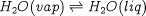
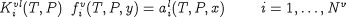
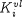

Open topic with navigation
Vapour-liquid equilibrium
The vapour-liquid equilibrium (VLE) relationships pertain to species that exist in both liquid and vapour phases. For the sodium chloride
example considered earlier, the following VLE equilibria may be established:

The VLE equations are given by:

where  is the vapour-liquid equilibrium constant for species i,  and
and  are the vapour fugacities and liquid-phase activities of component i, and is the number of species present in the vapour phase Here, T and P are the system temperature and pressure while x and
y denote molar fractions in the liquid and vapour phases respectively.
are the vapour fugacities and liquid-phase activities of component i, and is the number of species present in the vapour phase Here, T and P are the system temperature and pressure while x and
y denote molar fractions in the liquid and vapour phases respectively.